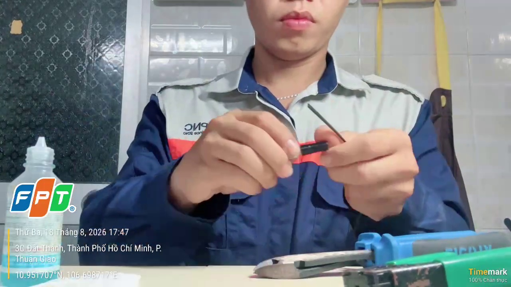
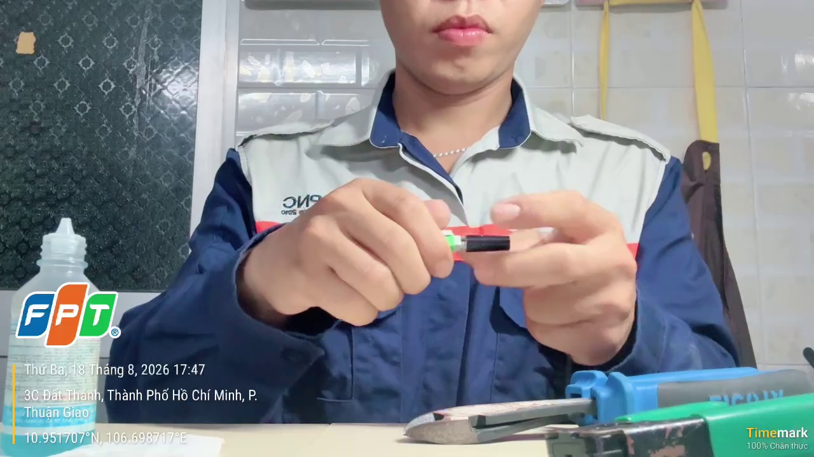
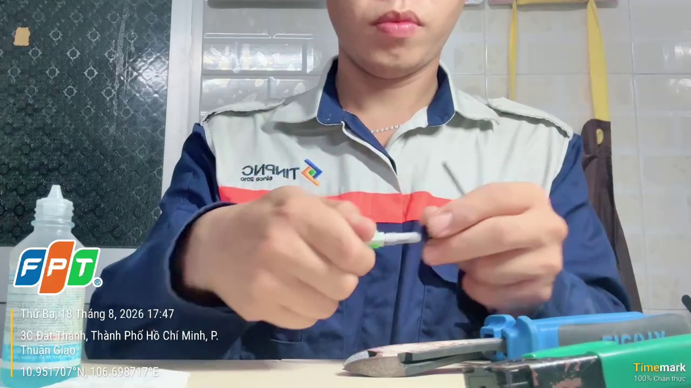
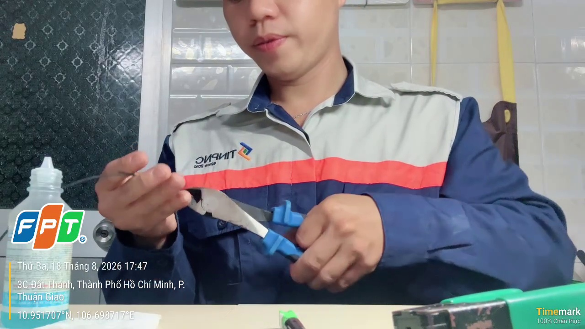
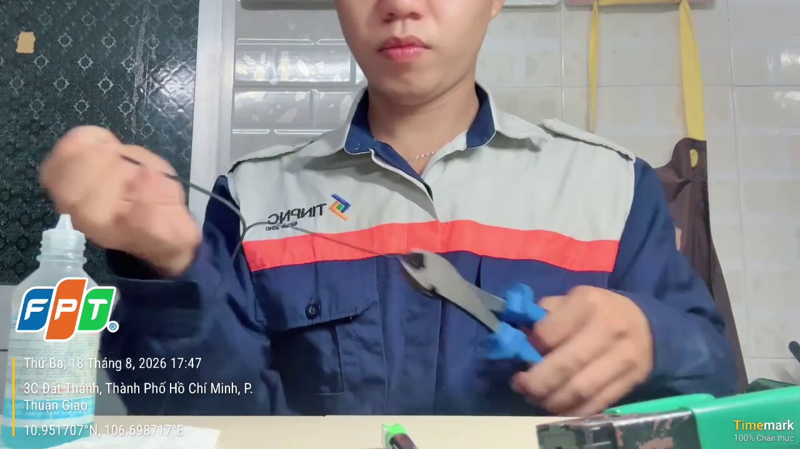
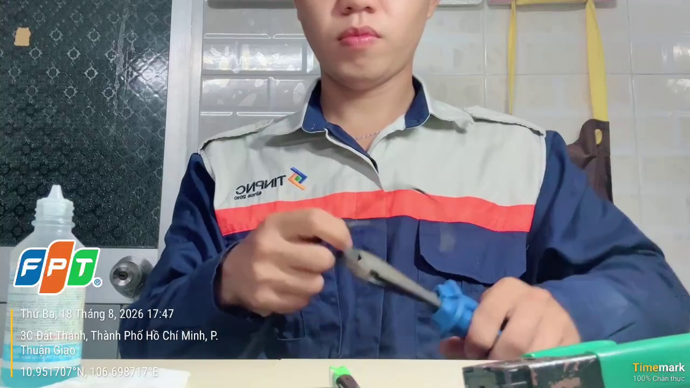
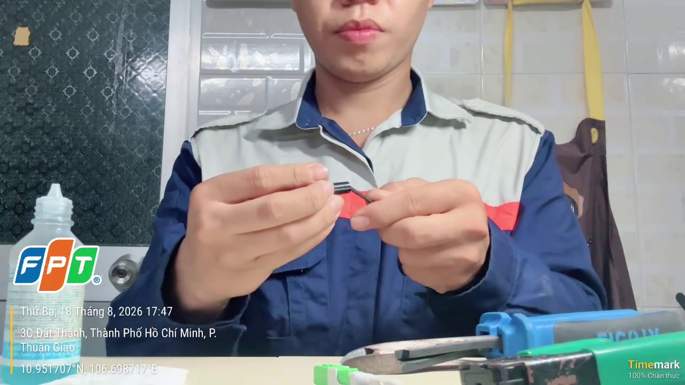
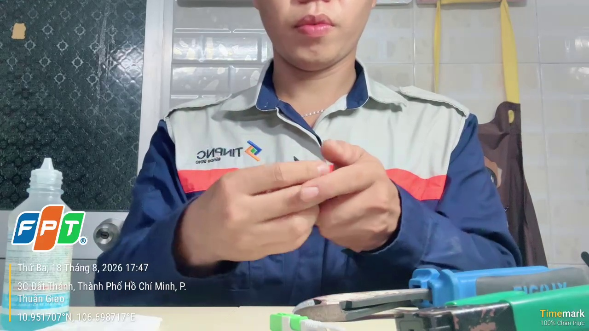
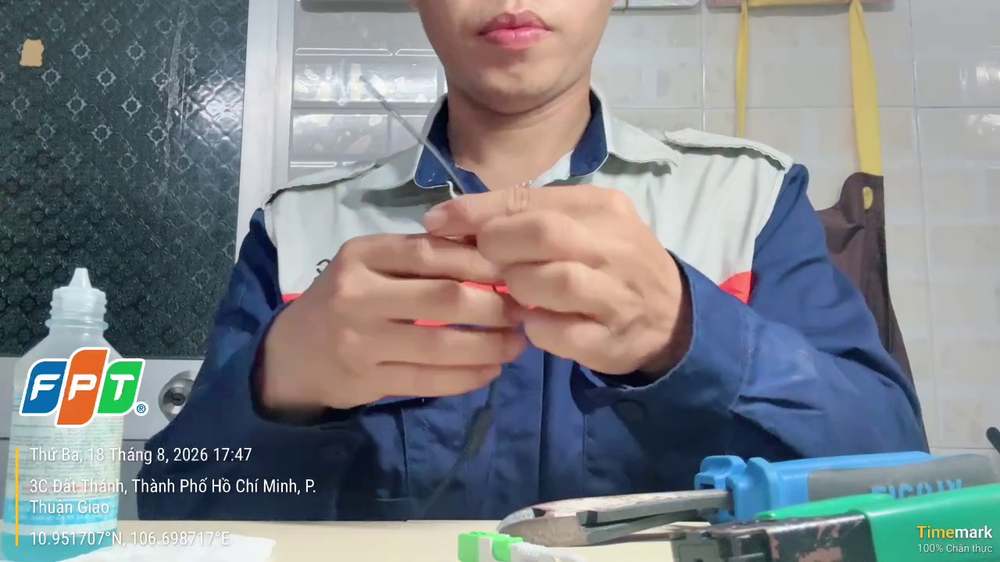

⚡ NGUYÊN TẮC CỐT LÕI • ÁP DỤNG ĐỒNG BỘ CHO MỌI BƯỚC TỪ B1 ➔ B9
Quy Tắc Vàng 3 Mốc Thời Gian: Start ➔ Key_Time ➔ End
Đây là quy chuẩn xác định cách gán nhãn xuyên suốt 300 video. Bất kể bước nào, người gán nhãn chỉ cần xác định chính xác đoạn tác động cơ học (Start ➔ End) và đúng 1 frame then chốt (Key_Time).
📊 Trực quan hóa dòng thời gian (Timeline Anatomy) của một bước thao tác
B0 (Nghỉ / Chuyển tiếp)Tay chưa chạm cáp / đang tìm kềm
➔
🟢 STARTChạm cáp + bắt đầu tác lực
⭐ KEY_TIMEĐúng 1 frame xong kết quả
🔴 ENDNhả ra khỏi sợi cáp
➔
B0Đổi đồ
Mốc 1: Bắt đầu
🟢
Mốc START
Khoảnh khắc tay hoặc công cụ chạm trực tiếp vào cáp/linh kiện và bắt đầu tác động lực cơ học.
⭐ TRỌNG TÂM CỦA MỌI BƯỚC
Mốc 2: Cột mốc then chốt
⭐
Mốc KEY_TIME (1 Frame)
Đúng 1 frame duy nhất ghi nhận sự kiện vật lý chốt hạ đã hoàn tất:
🎯 Dấu hiệu nhận biết từng bước:
B1: KTV đang vặn FC
B2: KTV đang kéo tách đôi lõi và dây treo
B3: Đuôi FC được luồng hoàn toàn vào dây
B4: KTV dùng sức bấm kiềm tách
B5: KTV đang dùng lực bấm kiềm tuốt tuốt lõi quang
B6a: Khăn giấy chạm vào sợi quang
B6b: Đóng nắp kéo cắt, cắt lõi quang
B7: Dây quang chạm vào đầu FC
B8: KTV vặn FC
B9: KTV dùng lực gỡ nắp FC
Mốc 3: Kết thúc
🔴
Mốc END
Khoảnh khắc công cụ hoặc ngón tay vừa nhả ra, rời hẳn khỏi sợi cáp/linh kiện.
B1
Tháo Đầu Fast Connector (FC)
⏱️ 3 – 6 giây
Video thực tế: 00:13.67 ➔ 00:15.98 (Key: 00:15.11)

Start: 00:13.67 (KTV cầm FC chuẩn bị vặn)

⭐ KEY: 00:15.11 (KTV đang vặn FC)

End: 00:15.98 (2 phần của FC tách rời nhau ra)
Mốc SKTV cầm FC chuẩn bị vặn
Keyframe ⭐KTV đang vặn FC
Mốc E2 phần của FC tách rời nhau ra
🔧 Dụng cụ nhận diện
Tay không + Đầu Fast Connector (thân đen, vỏ bảo vệ xanh lá, chuôi ốc ren đen).
🎯 Dấu hiệu ĐẠT
Đầu FC được tách thành 3 phần rõ ràng: Vỏ xanh, Thân FC đen, và Chuôi ốc đen để sẵn trên bàn.
⚠️ Chú ý tránh nhầm
Một số thợ làm B2 (cắt dây) trước B1. Vẫn gán đúng B1 lúc thợ tháo FC, không bị gò bó thứ tự.
B2
Tách & Cắt Bỏ Dây Treo Kim Loại
⏱️ 6 – 12 giây
Video thực tế: 00:03.40 ➔ 00:11.07 (Key: 00:08.70)

Start: 00:03.40 (KTV dùng kiềm cắt cắt tách đôi đầu lõi và treo)

⭐ KEY: 00:08.70 (KTV đang kéo tách đôi lõi và dây treo)

End: 00:11.07 (KTV bấm cắt dây treo)
Mốc SKTV dùng kiềm cắt cắt tách đôi đầu lõi và treo
Keyframe ⭐KTV đang kéo tách đôi lõi và dây treo
Mốc EKTV bấm cắt dây treo
🔧 Dụng cụ nhận diện
Kềm cắt cáp cơ khí (cán bọc cao su đỏ-xanh hoặc vàng, 2 lưỡi vát sắc nhọn).
🎯 Dấu hiệu ĐẠT
Dây thép gia cường bị bấm đứt rời khỏi thân cáp; đầu cáp chỉ còn phần dẹp chứa sợi quang.
⚠️ Chú ý tránh nhầm
Kềm cắt B2 khác hẳn kềm tuốt vỏ B4 (xanh lá) và kềm tuốt sợi B5 (xanh dương nhỏ).
B3
Luồn Cáp Vào Chuôi Ốc Chốt
⏱️ 3 – 6 giây
Video thực tế: 00:17.48 ➔ 00:18.98 (Key: 00:17.94)

Start: 00:17.48 (Đuôi FC sắp chạm vào dây)

⭐ KEY: 00:17.94 (Đuôi FC được luồng hoàn toàn vào dây)

End: 00:18.98 (Đuôi FC được luồng xuống sâu, cách đầu dây khoảng dài)
Mốc SĐuôi FC sắp chạm vào dây
Keyframe ⭐Đuôi FC được luồng hoàn toàn vào dây
Mốc EĐuôi FC được luồng xuống sâu, cách đầu dây khoảng dài
🔧 Dụng cụ nhận diện
Tay cầm chuôi ốc ren đen FC và đầu cáp quang vừa cắt ở B2.
🎯 Dấu hiệu ĐẠT
Đầu cáp chui lọt hẳn qua ống chuôi ốc; chuôi ốc trượt lùi về phía sau trên dây cáp.
⚠️ Chú ý tránh nhầm
Nếu thợ quên không luồn ốc trước khi tuốt vỏ B4/B5 thì KHÔNG gán B3 (đánh dấu lỗi quy trình).
B4
Tuốt Vỏ Ngoài Cáp Phẳng FTTH
⏱️ 10 – 20 giây
Video thực tế: 00:20.41 ➔ 00:24.58 (Key: 00:24.05)